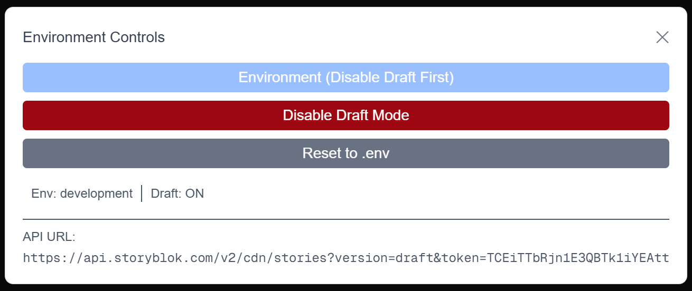

Blok by Blok
Storyblok Challenge Presentation
19 August 2025
Presented by: Bryan Gulley
Introduction
Hi, I'm Bryan Gulley, a software engineer with a passion for building modern web applications.
🗾 What is Blok by Blok
Basic web app to render blog posts
Using Storyblok Content Delivery API
Built with
React , TypeScript , Next.js , TailwindCSS
🧠 My Approach
- Plan - Identify, Estimate, Design
- Execute - Build, Test, Refine, Review
- Deliver - Document, Present, Handoff
🚀 Modern Tech Stack
- React 19 with Next.js 15 and App Router
- TypeScript for type safety
- TailwindCSS for styling
- Storyblok CD API Integration
🔄 Dynamic Content Management
- Environment switching
- Draft mode
- Real-time content updates

📱 User & Developer Experience (UX/DX)
- 🐌 Dynamic Slug-based routing
- 🍪 Cookie-based state management
- 📰 Markdown rendering capabilities
🤿 Architecture Deep Dive 🕵
blok-by-blok/
├── src/
│ ├── app/ # Next.js App Router
│ │ ├── globals.css # Global CSS styles
│ │ ├── layout.tsx # Root layout component
│ │ ├── page.tsx # Home page component
│ │ ├── favicon.ico # App favicon
│ │ ├── [slug]/ # Dynamic routing for Storyblok pages
│ │ │ └── page.tsx # Dynamic page component
│ │ └── api/ # Utility API routes
│ │ ├── clear-cookies/
│ │ │ └── route.ts # Clear environment/draft cookies
│ │ ├── set-draft-mode/
│ │ │ └── route.ts # Enable/disable draft mode
│ │ └── set-environment/
│ │ └── route.ts # Switch between environments
│ ├── components/ # Reusable UI components
│ │ ├── CookieNotice.tsx # Cookie consent notice
│ │ ├── EnvironmentToggle.tsx # Environment Controls
│ │ └── Markdown.tsx # Markdown content renderer
│ ├── types/
│ │ └── blokTypes.ts # Storyblok type definitions
│ └── utils/
│ └── storyblok.ts # Storyblok API utilities
├── package.json # Dependencies and scripts
├── tsconfig.json # TypeScript configuration
└── README.md # Project documentation
▲ Vercel Overview
🏠 Homepage Walkthrough
- Story listing from
page.tsx
- Dynamic content loading from Storyblok
🧭 Dynamic Page Navigation
- Click through to individual story pages
- Demonstrate slug-based routing in action
⚙️ Development Features
- Environment toggle functionality
- Draft mode switching
- Cookie management system
❓ Questions & Discussion
- Discuss potential improvements
- Open floor for questions